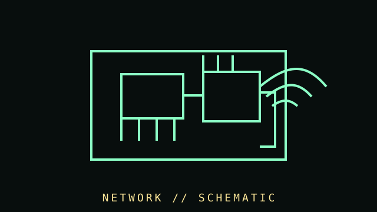

[ COMPONENT RECORD // NETWORK INTERFACE ]
Networking
hardware.
Network adapters connect a computer to local networks using Ethernet, Wi-Fi, fiber, or other media. Throughput depends on the whole link: adapter, driver, cabling, switch/access point, distance, interference, and configuration.

CLASS RECORD: LAN adapters and network interfaces. Link speed is a signaling/negotiated rate, not a promise of application throughput or Internet service speed.
Reference specifications
| Wired Ethernet | Common rates include 10/100/1000 Mb/s and multi-gigabit Ethernet. RJ45 copper links depend on cable category, length, termination, and peer negotiation. |
|---|---|
| Wireless | Wi-Fi generation, band, channel width, spatial streams, antenna configuration, regulatory domain, and access point determine negotiated link behavior. |
| Physical | Integrated, PCIe, M.2, USB, SFP/SFP+, and onboard interfaces exist. Slot/keying, antenna connectors, transceiver compatibility, and thermal load vary. |
| Software | MAC/PHY chipset, firmware, OS driver, VLAN/offload features, wake support, and power management should be documented by exact model. |
Identification & troubleshooting
- Record vendor/device IDs, chipset, link speed/duplex, firmware, driver, connector, antenna, and supported standards.
- For Ethernet, check cable, both link partners, port settings, and error counters before replacing an adapter.
- For Wi-Fi, document band/channel, signal strength, antenna placement, regulatory region, and nearby interference sources.
- Do not infer Wi-Fi capability from the operating-system marketing name alone; verify supported bands and features in the adapter datasheet.
- Include modems, cellular radios, fiber transceivers, switches, routers, access points, and USB cellular adapters in the wider network archive.
Sources & further reading
- IEEE — 802.3 Ethernet standardPrimary Ethernet standards family reference.
- Wi-Fi Alliance — Wi-Fi technology overviewIndustry organization overview; certified product details are model-specific.
- Intel — Ethernet products and documentationManufacturer specifications and support for Intel network adapters.